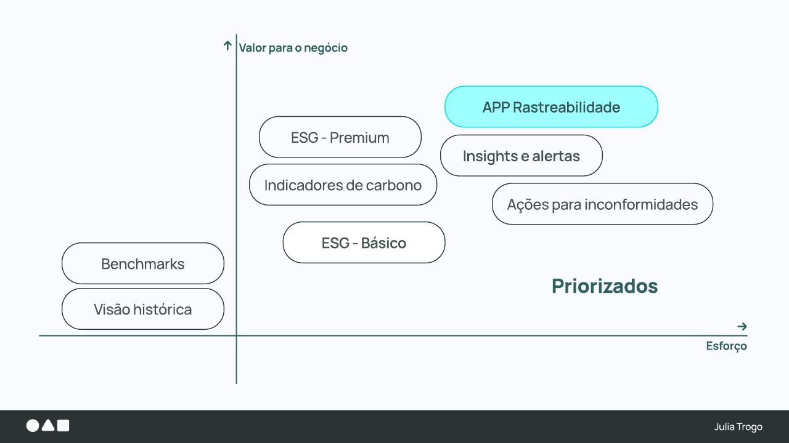
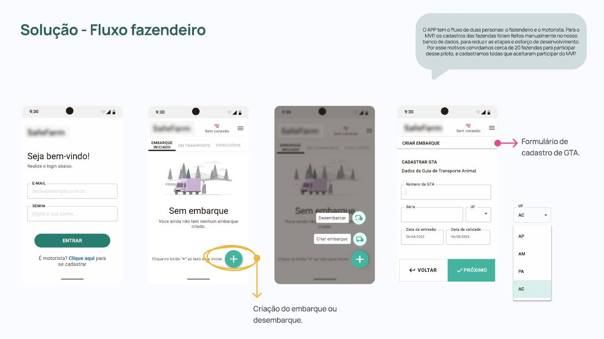
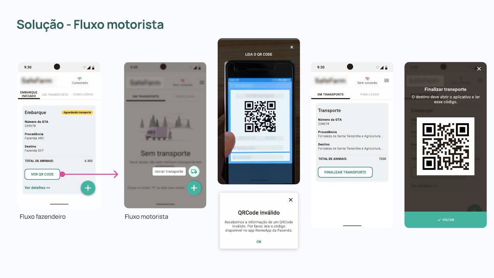
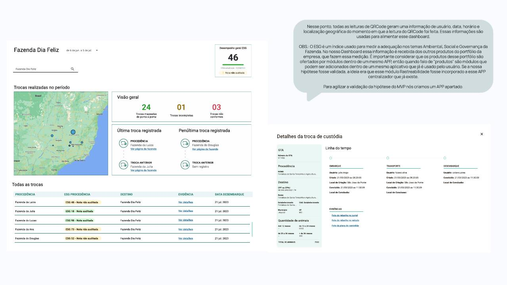

02Saúde e nutrição animal
Do discovery ao MVP: rastreando a custódia do gado no campo
Em 2023, para uma multinacional de saúde e nutrição animal, testamos se a rastreabilidade ajudaria frigoríficos a identificar a origem dos animais, levando a ideia do discovery a um MVP testado em campo.
- Papel
- Lead product researcher
- Time
- PO, tech lead e engenharia
- Duração
- Design Sprint de 14 dias + piloto de 2 meses
- Impacto
- 100%das trocas de custódia rastreadas 16fazendas 2frigoríficos parceiros
O projeto em resumo
Problema
Frigoríficos não conseguiam saber com segurança a origem do gado depois que os animais trocavam de mãos entre fazendas.
O que fiz
Conduzi um Design Sprint de 14 dias e desenhei e pilotei um app que registra cada troca de custódia, mais um dashboard para os frigoríficos.
Resultado
100% das trocas de custódia rastreadas em 16 fazendas em 2 meses, e 2 frigoríficos firmaram parceria.
Processo
- Kick-offalinhar a hipótese
- Entender3 dias
- Idear2 dias
- Jornada e protótipo4 dias
- Testar5 dias
- Piloto2 meses, 16 fazendas
Princípios de design por trás das decisões
Espelhar a jornada que as pessoas já seguem
O app copia a GTA impressa campo a campo, então não há nada novo para aprender.
Testar a maior aposta com o menor custo
Fazendas cadastradas à mão e visão do frigorífico em Tableau, para testar a hipótese rápido.
Gerar evidência como subproduto do trabalho
Cada leitura de QR code registra quem, quando e onde, sem formulário extra.
Contexto e hipótese
A empresa tem operação global em ciências da vida e materiais e, no Brasil, fornece soluções de saúde e nutrição animal ao setor agropecuário. O direcionamento era validar ou invalidar a hipótese de um produto novo com o menor esforço possível, mas entregando a visão de para onde direcionar o próximo investimento.
Abri com um kick-off estratégico para alinhar todos sobre o objetivo, as oportunidades já conhecidas, as premissas e as prioridades do momento, e para entender o material que a empresa já tinha. Isso definiu as etapas essenciais do discovery.
O PO era do time do cliente e facilitou o acesso a stakeholders e a alguns usuários. O arquiteto e o desenvolvedor eram do meu time.
“Acreditamos que nossa solução de rastreabilidade ajudaria os frigoríficos a identificar, com mais precisão e facilidade, a origem dos animais de fornecedores que são clientes da empresa.”
Design Sprint, quatro fases
- Fase 1, 3 diasEntendimento e definiçãoanálise dos dados do produto e seleção das dores prioritárias.
- Fase 2, 2 diasIdeaçãohipóteses, cenários, perguntas “como poderíamos” e priorização.
- Fase 3, 4 diasJornada e protótiposdefinição do fluxo e validação dos protótipos.
- Fase 4, 5 diasTestarprotótipos clicáveis e testes com consultores.
As dores de frigoríficos e fazendas já tinham sido mapeadas naquele ano pela equipe de produtos da empresa. Minha atuação foi priorizar, junto com a área de negócio, quais não eram atendidas por nenhuma outra solução do portfólio.
Para definir o fluxo do app combinei análise de dados e entrevistas com usuários, e mapeei a jornada macro da troca de custódia de hoje com três personas: fazendeiro, peão e motorista, em sete etapas.
O app manteve essa jornada como era e espelha os passos que as pessoas já seguem, o que facilita o aprendizado. A diferença é que agora o sistema rastreia cada troca de custódia.

A solução
Um app mobile, duas personas: fazendeiro e motorista, com logins diferentes.
Fazendeiro
O fazendeiro cria o embarque e preenche a GTA (guia de trânsito animal), com todos os campos do formulário impresso na mesma ordem e linguagem, para reduzir dúvidas. No fim, o app gera um QR code.

Motorista
O motorista lê esse QR code para receber o embarque e iniciar o transporte. No destino, finaliza o transporte gerando outro QR code, lido pelo fazendeiro que recebe os animais, que passa a ter os dados da GTA e dos animais. Isso fecha uma troca de custódia.

Frigorífico
Cada leitura de QR code registra usuário, data, horário e localização. Esses dados alimentam um dashboard em Tableau para os frigoríficos, escolhido para testar rápido e com pouco esforço: fazendas de origem e destino, nota ESG da origem (recebida dos outros produtos da empresa), evidências em foto e linha do tempo de cada troca.
No MVP, as fazendas foram cadastradas manualmente no banco de dados, para reduzir etapas e esforço de desenvolvimento.

Piloto, feedback e próximos passos
- Piloto
- 2 meses, 16 fazendas
- Acompanhamento presencial
- 3 fazendas no Mato Grosso
- Trocas rastreadas
- 100%
- Parcerias com frigoríficos
- 2
Convidamos cerca de 20 fazendas e cadastramos todas que aceitaram. Acompanhei presencialmente a primeira semana do piloto em três delas, o que revelou as melhorias de usabilidade listadas abaixo. Quinzenalmente apresentei o dashboard para gestores de operação dos frigoríficos parceiros que também entraram nos pilotos.
“Gosto de agora conseguir ver com mais facilidade de quem compram as fazendas que nos fornecem.”
“Não foi difícil para mim. Fiquei com o pé atrás quando vieram com essa ideia, porque achei que ia dar mais trabalho para a gente, mas foi fácil colocar as coisas no app.”
Próximos passos:
- 01Incluir integração com a solução ESG
- 02Aprimorar a visualização dos dados
- 03Otimização de fluxo
- 04Automatização da adição da GTA
- 05Permitir que as fazendas visualizem seus principais vínculos comerciais
- 06Incluir tempo de espera por etapa da troca no fluxo
Desfecho
Em todas as fazendas do piloto, todas as trocas de custódia de dois meses foram rastreadas de ponta a ponta pelo app, e dois grandes frigoríficos que operam nas regiões testadas firmaram parceria. O feedback de frigoríficos e fazendas, somado à semana presencial, definiu o roadmap da próxima versão.
Uma troca de custódia, passo a passo
Da fazenda ao dashboard
- 1Fazendeiro cria o embarquepreenche a GTA
- 2QR code 1gerado pelo app
- 3Motorista lêinicia o transporte
- 4Chegadamotorista finaliza, QR code 2
- 5Fazendeiro de destino lêrecebe GTA e animais
- 6Dashboard do frigoríficoorigem, linha do tempo, evidências